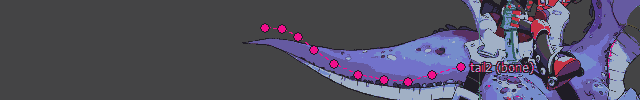
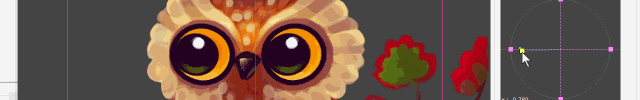

You can do this. Click here for How to movies and online samples!
こんなことが出来ますよ。HowTo動画や、実行可能なオンラインサンプルをご覧ください。


Overview
SpineAnimationrig is a tool for control the spine-runtime.
Until now, Spine-runtime was used by programmers, designers could not touch it.
This tool is intended to allow designers to use Spine-runtime functionality.
SpineAnimationrig は Spine-runtime を制御するためのツールです。
エディタより先にあたる Spine-runtime の機能を使用します。
今まで spine-runtime はプログラマーの領域であり、デザイナーが介入することはとても難しいことでした。
このツールは、デザイナーでも Spine-runtime をつかってより高度な機能を使用することを目的としています。
This tool is free software . Free to use forever.
このツールはフリーソフト です。ずっと無料で使えます。
このツールは
Feature
Multi track animations
You can control multi-track animations on the timeline .
Don't you think you want to change and blend multi animations?
マルチトラックアニメーションをタイムラインでコントロールできます。 タイミングを合わせてアニメーションを切り替えたり、合成したりしたいですよね？
マルチトラックアニメーションをタイムラインでコントロールできます。 タイミングを合わせてアニメーションを切り替えたり、合成したりしたいですよね？

Control animation from appside
You can easily control animation values from the built-in-application .
For example, if you set the mouth open / close value, you will have a character that speaks with a microphone.
組み込みアプリケーションからアニメーションの値を簡単に操作することが出来ます。例えば口の開閉値に紐付けしておけば、マイク入力で喋るキャラの完成です。
組み込みアプリケーションからアニメーションの値を簡単に操作することが出来ます。例えば口の開閉値に紐付けしておけば、マイク入力で喋るキャラの完成です。

Physics
With this tool you can easily use physics !!! Don't need unity.
It's not perfect, but it can be used enough if it is about hair wiggle motion .
このツールでは物理計算を使うことが出来ます！Unityは必要ありません。完璧なものではありませんが、髪を揺らすぐらいなら十分使えると思いますよ。
このツールでは物理計算を使うことが出来ます！Unityは必要ありません。完璧なものではありませんが、髪を揺らすぐらいなら十分使えると思いますよ。

2D directionaly blend
Directional blending of animation is possible.
xy alpha ratio can be set, Combining(blending) 4 animations each.
アニメーションの指向性合成が可能です。xyの合成率を設定出来、それぞれ4アニメーションを合成します。
アニメーションの指向性合成が可能です。xyの合成率を設定出来、それぞれ4アニメーションを合成します。

Export images and movie
Has a function to export rendered images .
Useful when importing into AfterEffects .
Video output is possible by installing FFmpeg.
レンダリングされた画像を出力する機能があります。 AfterEffectsへインポートする際に役立つでしょう。 FFmpegをインストールすれば動画の出力が可能です。
レンダリングされた画像を出力する機能があります。 AfterEffectsへインポートする際に役立つでしょう。 FFmpegをインストールすれば動画の出力が可能です。
Unity component
Unityコンポーネントが付属されます。簡単にUnityに持ち込むことが出来ます。詳しくはサンプルをご覧ください。
Editor

Runtime
Embed in the application using the Animationrig-runtime .
Animationrig (alone) is a non-dependent library. It can be used in various environments.
Provide C++、C-sharp、Unity Component.
Please try Unity sample.
アプリケーションに組み込むにはAnimationrigランタイム を使用します。
Animationrig(単体)は依性が無いライブラリです。環境を選ばず使用できます。
C++、C-sharp、Unityコンポーネントをメインに提供しています。
まずはUnityサンプルをお試しください。
アプリケーションに組み込むには
Spine is required
Release notes

2019/10/19
Support camera feature. You can control the viewpoint.
Please refer readme - camera object for details.
カメラオブジェクトをサポートしました。視点変更が可能です。
2019/10/04
Support blend animation and physics, physics blend ratio.
Please refer readme - how to physics for details.
物理計算とアニメーションの合成、物理計算とのブレンド率をサポートしました。

2019/09/11
Support give power (wind) to physics.
and you can link the object position to the parent object bone.
物理計算に力（風）を与えられるようになりました。
オブジェクト位置を親オブジェクトのボーンにリンク出来るようになりました。
Download
FreeSoftware
Version : 0.7 , rev 436 , latest 40
Editor-platform : windows
Runtime-language : c++ , c-sharp , UnityComponent
Spine file version : 3.7 , 3.8.71
Version : 0.7 , rev 436 , latest 40
Editor-platform : windows
Runtime-language : c++ , c-sharp , UnityComponent
Spine file version : 3.7 , 3.8.71

copyright Ko-Ta Takeuchi.